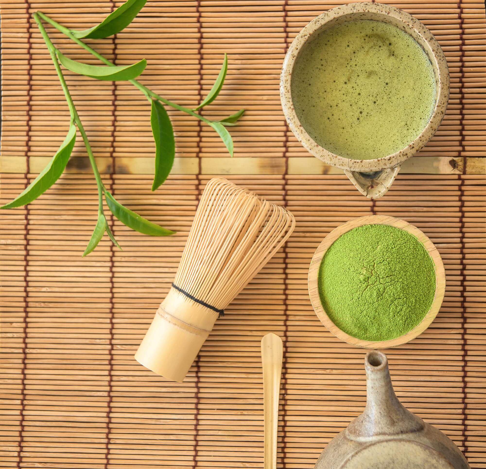

Matcha is a bright green, finely ground powder. It is made from shaded ground green tea leaves. The flavor profile can be described as rich, strong, umami, and vegetal, and tastes can vary between the regions the matcha comes from. Matcha originates from China and Japan. It undergoes very specific harvesting methods that have been perfected over centuries.